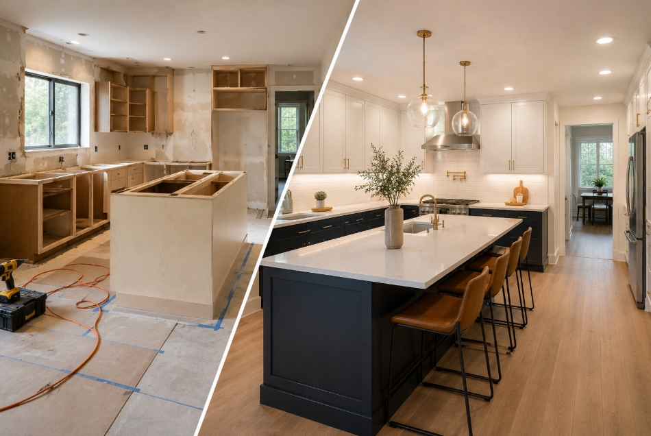

Choose the service that best matches your project
Start with a popular service below or browse by category if you are still deciding which type of help fits best.
Free to use · No obligation · Local professionals · No spam blast
Start with a popular service
These are some of the most common ways homeowners and property owners start a request.

Kitchen Remodeling
Cabinets, countertops, flooring, backsplash, lighting, layouts, and full kitchen renovation projects.
Start request
House Cleaning
Recurring cleanings, deep cleaning, move-in and move-out cleaning, and more.
Start request
Roofing
Roof repairs, replacements, leaks, flashing, shingles, and general roofing projects.
Quick requestPlumbing
Leaks, drains, faucets, toilets, water heaters, and general plumbing work.
Quick requestHVAC
AC repair, installations, replacements, ductwork, and indoor comfort services.
Quick requestHandyman
Small repairs, mounting, assembly, patching, fixtures, and general home help.
Quick requestRemodeling & Construction
Kitchen remodeling, bathroom remodeling, room additions, whole-home remodeling, contractor-led renovations, and larger projects.
Kitchen Remodeling includes a more detailed guided request today, while broader remodeling requests can still start with a simpler request.
Roofing & Exterior
Roofing, roof repairs, roof replacement, leaks, shingles, gutters, fences, pavers, and exterior improvement projects.
Choose the service that feels closest to your project and start with the option that best matches the work you need.
Plumbing
Leaks, drain issues, water heaters, faucets, toilets, fixture installs, and general plumbing repairs.
Choose the service that feels closest to your project and start with the option that best matches the work you need.
Electrical
Panels, outlets, lighting, EV chargers, troubleshooting, inspections, and electrical upgrades.
Choose the service that feels closest to your project and start with the option that best matches the work you need.
HVAC
AC repair, replacement, installation, ductwork, air duct cleaning, and indoor comfort services.
Choose the service that feels closest to your project and start with the option that best matches the work you need.
Flooring & Interior
Flooring, drywall, tile, interior painting, exterior painting, repairs, and interior updates.
Choose the service that feels closest to your project and start with the option that best matches the work you need.
Outdoor & Landscaping
Landscaping, yard cleanup, lawn help, irrigation, pressure washing, and outdoor improvement projects.
Choose the service that feels closest to your project and start with the option that best matches the work you need.
Cleaning Services
House cleaning, deep cleaning, office cleaning, commercial cleaning, move-in cleaning, move-out cleaning, and recurring cleaning.
Choose the service that feels closest to your project and start with the option that best matches the work you need.
General Home Services
Handyman work, junk removal, pool maintenance, pest control, and general home maintenance help.
Choose the service that feels closest to your project and start with the option that best matches the work you need.